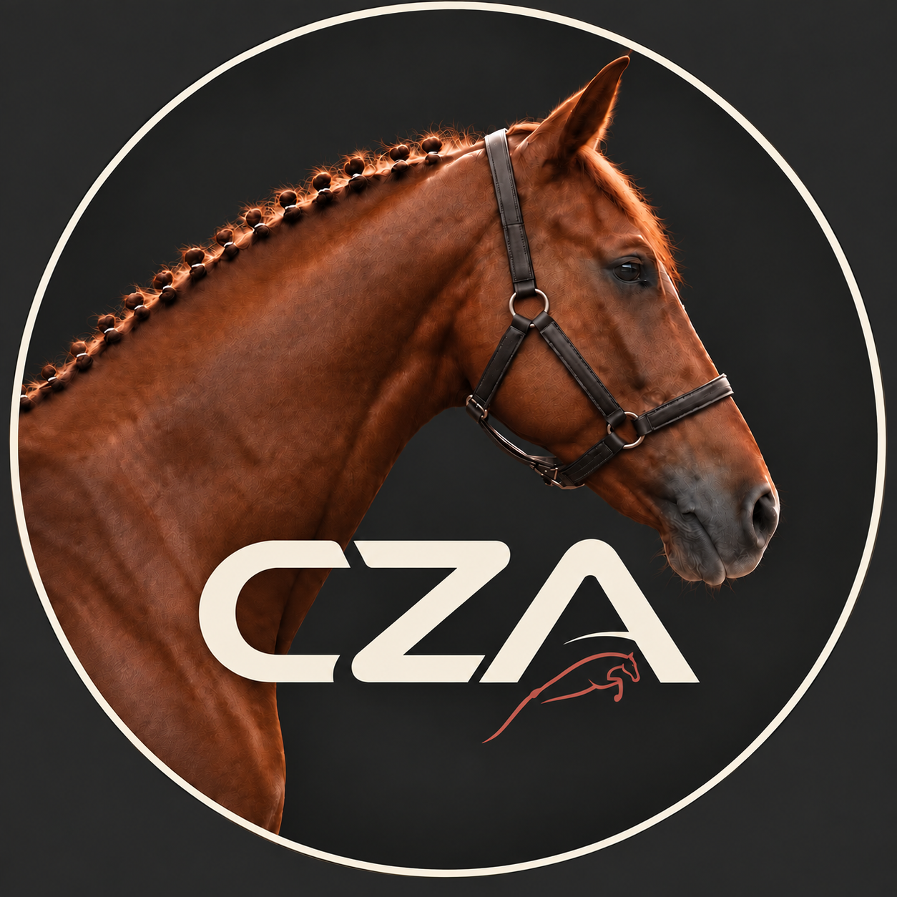

PRIMEROS PASOS CON CABALLOS
Para quienes no tienen experiencia y quieren aprender a relacionarse con un caballo, conocer sus cuidados básicos y comenzar a montar con confianza, a su propio ritmo.

Clases de equitación para principiantes y jinetes con experiencia.
Para quienes no tienen experiencia y quieren aprender a relacionarse con un caballo, conocer sus cuidados básicos y comenzar a montar con confianza, a su propio ritmo.
Para quienes ya montan y buscan mejorar su posición, sus ayudas y la comunicación con el caballo, incorporando ejercicios de iniciación al salto.
Para jinetes y amazonas con experiencia que buscan mejorar su técnica y el desempeño junto a su caballo. Trabajamos el ritmo, las distancias y la conducción en recorridos, con objetivos adaptados al nivel de cada binomio.
Modalidad de entrenamiento regular o clínica intensiva.